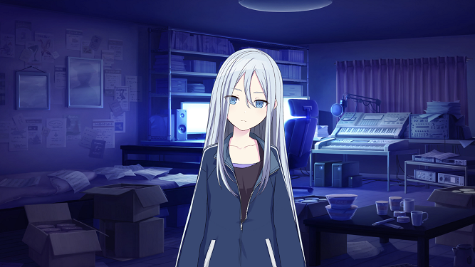
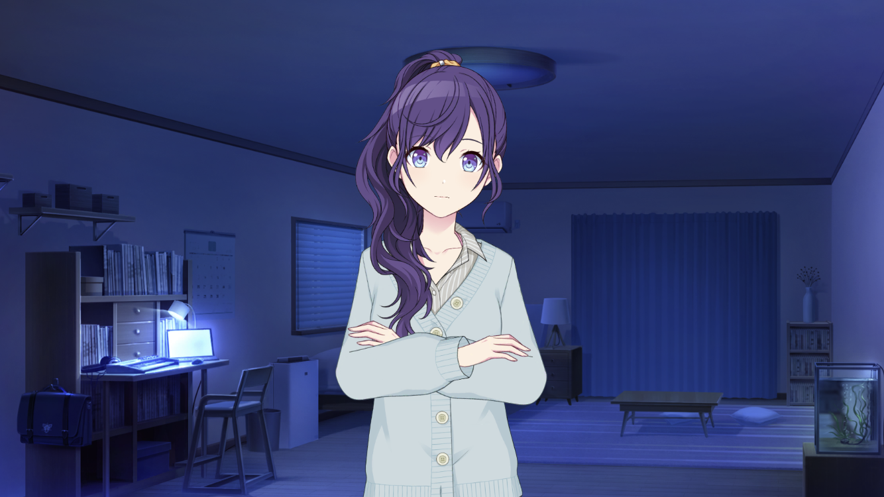
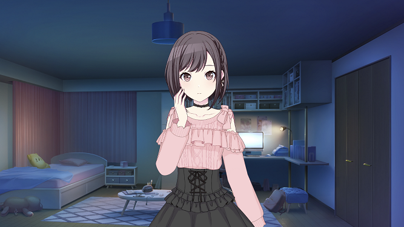
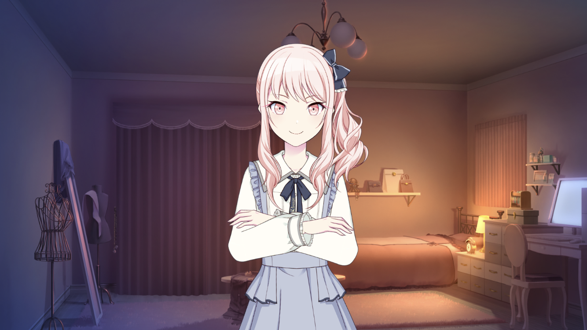
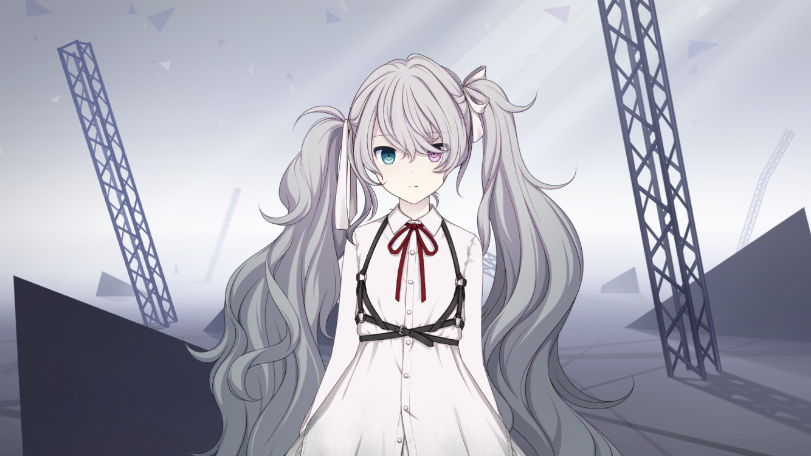
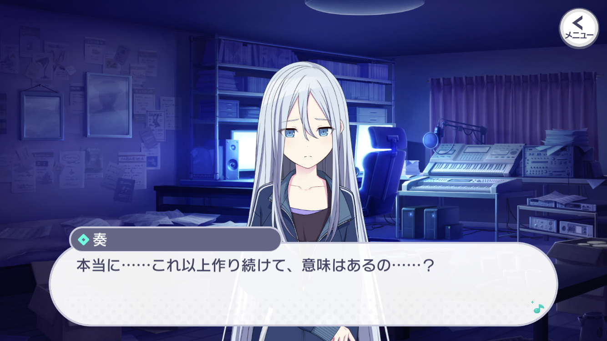
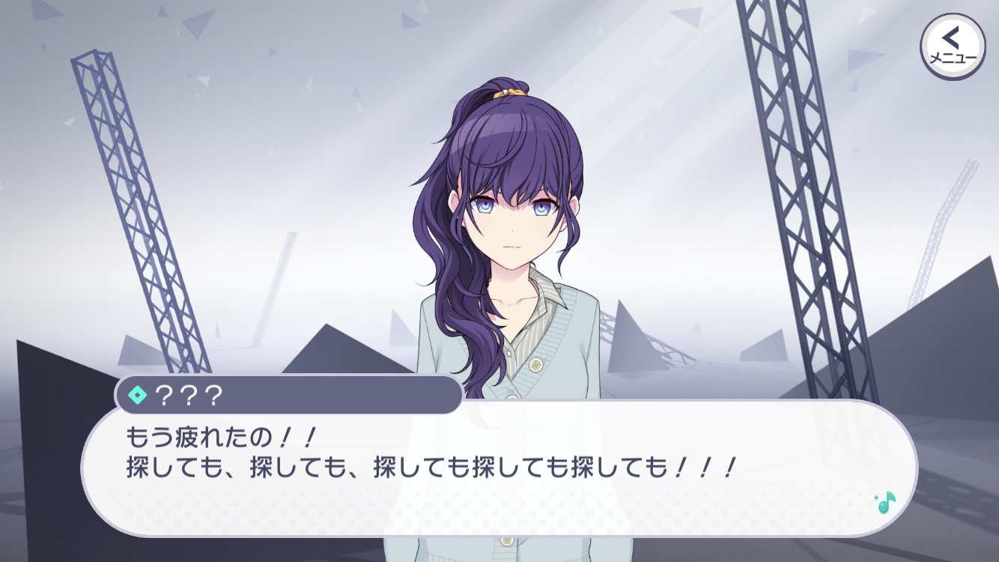
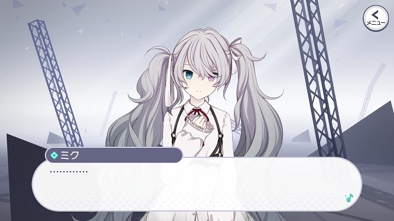
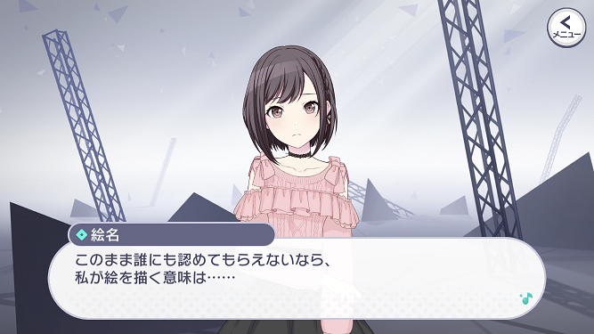
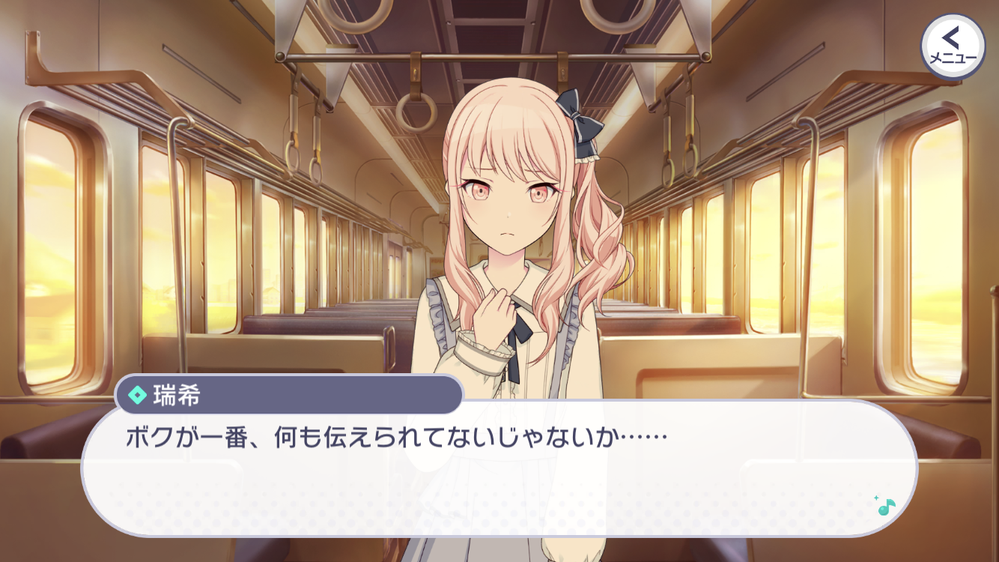

宵崎 奏 (よいさき かなで)
自分の音楽が大切な人を絶望させてしまったトラウマを持つ。
その経験から、「誰かを幸せにする曲をつくり続けなければならない」と考えるようになり、『25時、ナイトコードで。』を結成。
主に作曲を担当している。
25時、ナイトコードで。
誰もいないセカイ
25時、ナイトコードで。(略称: ニーゴ)は、ネット上で活動する正体不明の音楽ユニットです。


朝比奈 まふゆ (あさひな まふゆ)
明るくユーモアもあり、誰からも頼られる優等生。
サークルメンバーの中で、唯一学校にも不通に通っている。
サークル活動の中でも、作詞を担当しながら様々な気遣いを見せる。
一見、完璧な優等生に見えるが……？
明るくユーモアもあり、誰からも頼られる優等生。
サークルメンバーの中で、唯一学校にも不通に通っている。
サークル活動の中でも、作詞を担当しながら様々な気遣いを見せる。
一見、完璧な優等生に見えるが……？

東雲 絵名 (しののめ えな)
承認されたいという気持ちが強く、SNS依存気味。
父親は有名な画家で、自身も絵を描いて投稿していた。
それを見つけた奏に声を掛けられメンバーに。
サークルでは主に動画用のイラストを担当している。
承認されたいという気持ちが強く、SNS依存気味。
父親は有名な画家で、自身も絵を描いて投稿していた。
それを見つけた奏に声を掛けられメンバーに。
サークルでは主に動画用のイラストを担当している。

暁山 瑞希(あきやま みずき)
可愛いものが大好きな気分屋。
たまたま聴いた奏の曲に惹かれるものを感じ、MVをつくって投稿する。
それが奏自身の目に留まり、動画担当として誘われた。
サークルメンバーの誰も知らない秘密がある。
可愛いものが大好きな気分屋。
たまたま聴いた奏の曲に惹かれるものを感じ、MVをつくって投稿する。
それが奏自身の目に留まり、動画担当として誘われた。
サークルメンバーの誰も知らない秘密がある。
バーチャル・シンガー

初音ミク
真っ白な髪のミクが、ただ、セカイに迷い込んできた奏達の前に現れる。
真っ白な髪のミクが、ただ、セカイに迷い込んできた奏達の前に現れる。
メインストーリーのあらすじは公式動画があるのでそちらを確認してみてください。
なお、この動画のBGMは 悔やむと書いてミライ です。
---
ボイスチャットツール『ナイトコード』でやり取りをしているサークル仲間と日々楽曲づくりをしている宵崎奏。
お互い顔も名前も知らないが、それなりにうまくやっていたはずだった。
しかし、ある日を境にサークル仲間のひとりと連絡が取れなくなってしまう。
なお、この動画のBGMは 悔やむと書いてミライ です。
---
ボイスチャットツール『ナイトコード』でやり取りをしているサークル仲間と日々楽曲づくりをしている宵崎奏。
お互い顔も名前も知らないが、それなりにうまくやっていたはずだった。
しかし、ある日を境にサークル仲間のひとりと連絡が取れなくなってしまう。
①奏と「呪い」

ニーゴの要である奏は、「誰かを救う曲を作り続けなければいけない」という呪いのようなものを抱えて生きています。
自分の歌で父親を傷つけてしまったこと、父親から「これからも奏の音楽を作り続けるんだよ」と言われたことが彼女を長らく縛っています。
時には食べること、寝ることすら忘れて曲を作り続ける彼女ですが、ある時「自分の曲は誰かを救うのに足りなかった」という現実に直面します。
それでも自分は曲を作り続けなければいけない、でもこれ以上作り続けて本当に誰かを救えるのか、と奏はさらに苦しんでしまいます。
彼女が自分の呪いに、使命にどう向き合っていくのかは特に重要なポイントになってきます。
自分の歌で父親を傷つけてしまったこと、父親から「これからも奏の音楽を作り続けるんだよ」と言われたことが彼女を長らく縛っています。
時には食べること、寝ることすら忘れて曲を作り続ける彼女ですが、ある時「自分の曲は誰かを救うのに足りなかった」という現実に直面します。
それでも自分は曲を作り続けなければいけない、でもこれ以上作り続けて本当に誰かを救えるのか、と奏はさらに苦しんでしまいます。
彼女が自分の呪いに、使命にどう向き合っていくのかは特に重要なポイントになってきます。
②まふゆと「自分」

まふゆは「優等生」です。しかし厳密に言うと「人前では優等生らしく振る舞っている人」です。
本人が何かあくどい野望を持ってそうしているわけではありません。それが彼女にとっての普通であり、本当の彼女というものを本人ですら見失っているのです。
両親はまふゆに好きなことをやらせたいと言いつつも、実際は両親の決めた型にはまるしかない環境に置いています。
まふゆは「周りから求められるまふゆ」として生き続け、自分の好きなことも、ついには食べ物の味や感情なども彼女から消え去ってしまいます。
「私」という存在がどこでも、ニーゴでも見つからなかった、そんな彼女を救える誰かは現れるのでしょうか。
本人が何かあくどい野望を持ってそうしているわけではありません。それが彼女にとっての普通であり、本当の彼女というものを本人ですら見失っているのです。
両親はまふゆに好きなことをやらせたいと言いつつも、実際は両親の決めた型にはまるしかない環境に置いています。
まふゆは「周りから求められるまふゆ」として生き続け、自分の好きなことも、ついには食べ物の味や感情なども彼女から消え去ってしまいます。
「私」という存在がどこでも、ニーゴでも見つからなかった、そんな彼女を救える誰かは現れるのでしょうか。
③ミクと「セカイ」

まふゆの想いでできた「誰もいないセカイ」は、他のセカイと違って本当に何もありません。
そして、セカイにいるミクも「本当に初音ミクなのか？」と思わず感じてしまうような、かなり違った雰囲気を持っています。
「初音ミク」という存在が抱く無限の可能性の1つを感じられる構図になっており、 何もない空間にたった1人でまふゆ達を待ち続けるミクの切なさには心が締め付けられます。
いつかこのセカイのミク自身も幸せになれる日が来るのでしょうか。
そして、セカイにいるミクも「本当に初音ミクなのか？」と思わず感じてしまうような、かなり違った雰囲気を持っています。
「初音ミク」という存在が抱く無限の可能性の1つを感じられる構図になっており、 何もない空間にたった1人でまふゆ達を待ち続けるミクの切なさには心が締め付けられます。
いつかこのセカイのミク自身も幸せになれる日が来るのでしょうか。
メインストーリー後の展開
クリックして開く(※ネタバレ含む)
④絵名と「才能」

ニーゴのイラスト担当である絵名には絵の才能がありません。
それでも努力を続けてきた絵名ですが、結局自分のイラストは「ニーゴという存在ありき」だと気づかされます。
自撮りのアカウントではすぐに「いいね」がたくさんつくのに、イラストのアカウントではほとんど反応をもらえない。
周りからも、画家である親からも自分の絵を認めてもらえない絵名は、自分が絵を描く意味を見失ってしまいます。
自分がやりたいことに才能がない、そんな事実を絵名はどう受け止めてどう進んでいくのでしょうか。
それでも努力を続けてきた絵名ですが、結局自分のイラストは「ニーゴという存在ありき」だと気づかされます。
自撮りのアカウントではすぐに「いいね」がたくさんつくのに、イラストのアカウントではほとんど反応をもらえない。
周りからも、画家である親からも自分の絵を認めてもらえない絵名は、自分が絵を描く意味を見失ってしまいます。
自分がやりたいことに才能がない、そんな事実を絵名はどう受け止めてどう進んでいくのでしょうか。
⑤瑞希と「秘密」

ニーゴのムードメーカーでもある瑞希ですが、本人には誰にも言えない秘密があるそうです。
その秘密は、これまでの伏線の張り方からして「性別」に関するものではないか？ とプレイヤーたちは推測しています(公式発表はされていません)。
プロジェクトセカイの中で唯一「性別不明」のキャラクターである瑞希は、「自分の秘密を話せないのに友達にはなれない」と考えています。
「ボクはボクでいたいだけ」、それでも人間関係が崩れるのが怖くて本当のことを言えずにいます。それがニーゴのメンバー相手であってもです。
いつも元気で笑顔の彼女が抱える悩みは、実はどのメンバーよりも大きいものなのかもしれません。
その秘密は、これまでの伏線の張り方からして「性別」に関するものではないか？ とプレイヤーたちは推測しています(公式発表はされていません)。
プロジェクトセカイの中で唯一「性別不明」のキャラクターである瑞希は、「自分の秘密を話せないのに友達にはなれない」と考えています。
「ボクはボクでいたいだけ」、それでも人間関係が崩れるのが怖くて本当のことを言えずにいます。それがニーゴのメンバー相手であってもです。
いつも元気で笑顔の彼女が抱える悩みは、実はどのメンバーよりも大きいものなのかもしれません。
カバー楽曲
ニーゴのカバーする楽曲は、人生における孤独、苦痛、悲哀、絶望などといった「暗さ」を感じられるものが多いです。
VOCALOID界隈ではこういった曲が決して珍しくなく、むしろ人気の高いジャンルですらあります。
プロジェクトセカイがVOCALOIDの楽曲を使ったゲームである以上、ニーゴのようなユニットの存在は欠かせないものでしょう。
カバー楽曲「独りんぼエンヴィー」では、どこか無気力な歌声と踊りが暗い曲調にマッチしています。
舞台の背景もシンプルかつ無機質的なものとなっており、これらがニーゴの特徴であると言えます。
VOCALOID界隈ではこういった曲が決して珍しくなく、むしろ人気の高いジャンルですらあります。
プロジェクトセカイがVOCALOIDの楽曲を使ったゲームである以上、ニーゴのようなユニットの存在は欠かせないものでしょう。
カバー楽曲「独りんぼエンヴィー」では、どこか無気力な歌声と踊りが暗い曲調にマッチしています。
舞台の背景もシンプルかつ無機質的なものとなっており、これらがニーゴの特徴であると言えます。
また、「命に嫌われている」はサービス開始前に2DMVが公開されて話題となりました。
この曲は苦しさや辛さを感じる曲としてはトップクラスに有名で、ニーゴという存在が公開されて以来カバーを切望されていました。
MVには原曲の雰囲気が多分に残っており、プロジェクトセカイがオリジナルの楽曲を大切に扱っていることが伝わってきます。
この曲は苦しさや辛さを感じる曲としてはトップクラスに有名で、ニーゴという存在が公開されて以来カバーを切望されていました。
MVには原曲の雰囲気が多分に残っており、プロジェクトセカイがオリジナルの楽曲を大切に扱っていることが伝わってきます。
書き下ろし楽曲
2DMV付きの楽曲「携帯恋話」は、ニーゴらしい切なさを感じられる曲になっています。
絵名と瑞希の2人をミクが繋いでいるかのような構成がニーゴファンから高い評価を受けています。
普段は直接会わずにネットで活動しているニーゴの環境も意識しているのか？ と考える人もいますが、真偽のほどは分かりません。
ちなみにこの曲のクリエイターであるまふまふさんは、暗くどこか怖さを感じる楽曲をこれまでにもいくつか作られている方です。
彼自身の歌い手としての知名度も高く、この曲目当てで始めたプレイヤーも少なくないでしょう。
絵名と瑞希の2人をミクが繋いでいるかのような構成がニーゴファンから高い評価を受けています。
普段は直接会わずにネットで活動しているニーゴの環境も意識しているのか？ と考える人もいますが、真偽のほどは分かりません。
ちなみにこの曲のクリエイターであるまふまふさんは、暗くどこか怖さを感じる楽曲をこれまでにもいくつか作られている方です。
彼自身の歌い手としての知名度も高く、この曲目当てで始めたプレイヤーも少なくないでしょう。
また、3DMV付きの楽曲「悔やむと書いてミライ」では、特にサビで1人1人の苦しみの叫びが突き刺さります。
さらにそれぞれの動き(歩き方や方向など)が少しずつ違っており、メインストーリーを読み進めるとその意味もある程度わかってきます。
余談ですが、バーチャルライブ(3DMV楽曲を実際のライブのように観客席から見れる機能)において、 ニーゴ全員が揃った3DMVがサービス開始から4カ月の間これしかなかったためクリスマスライブでこの曲を流さざるを得ないという事案が発生しました。
なお、この曲のクリエイターもまふまふさんです。
さらにそれぞれの動き(歩き方や方向など)が少しずつ違っており、メインストーリーを読み進めるとその意味もある程度わかってきます。
余談ですが、バーチャルライブ(3DMV楽曲を実際のライブのように観客席から見れる機能)において、 ニーゴ全員が揃った3DMVがサービス開始から4カ月の間これしかなかったためクリスマスライブでこの曲を流さざるを得ないという事案が発生しました。
なお、この曲のクリエイターもまふまふさんです。